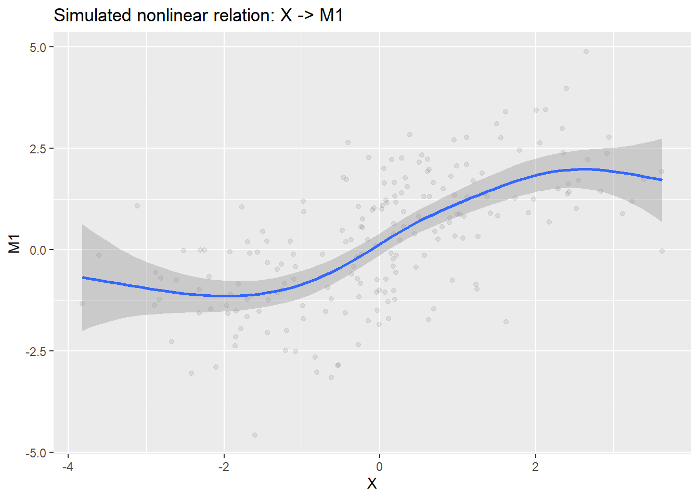
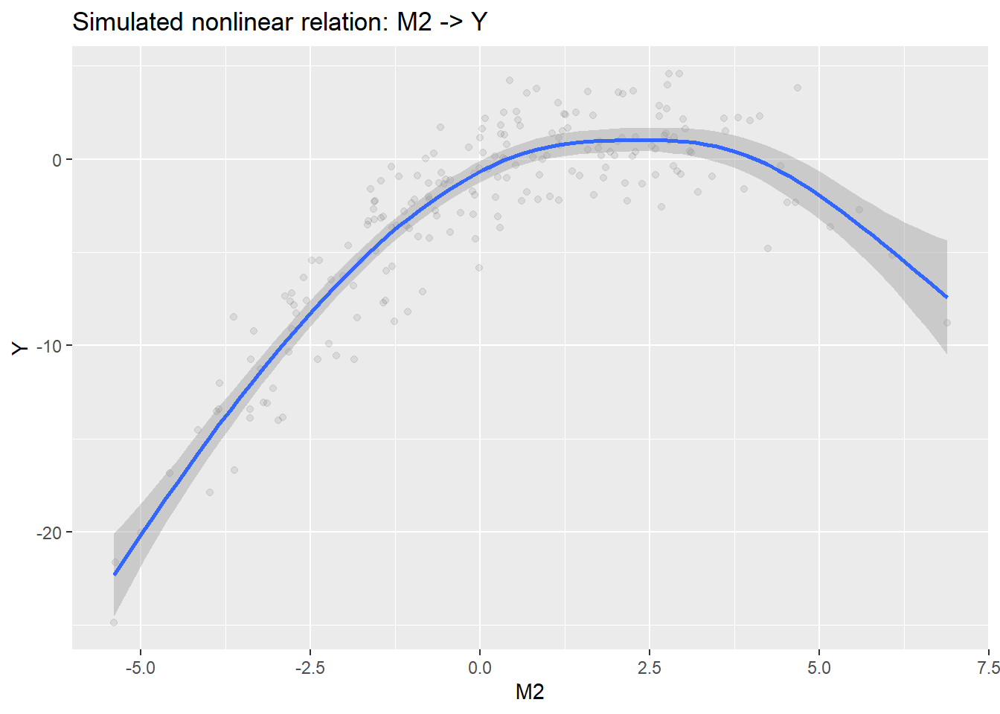
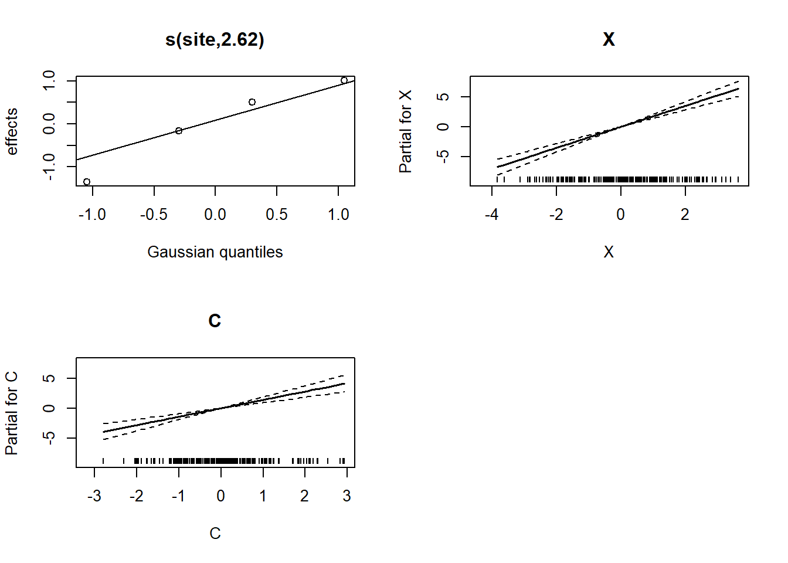
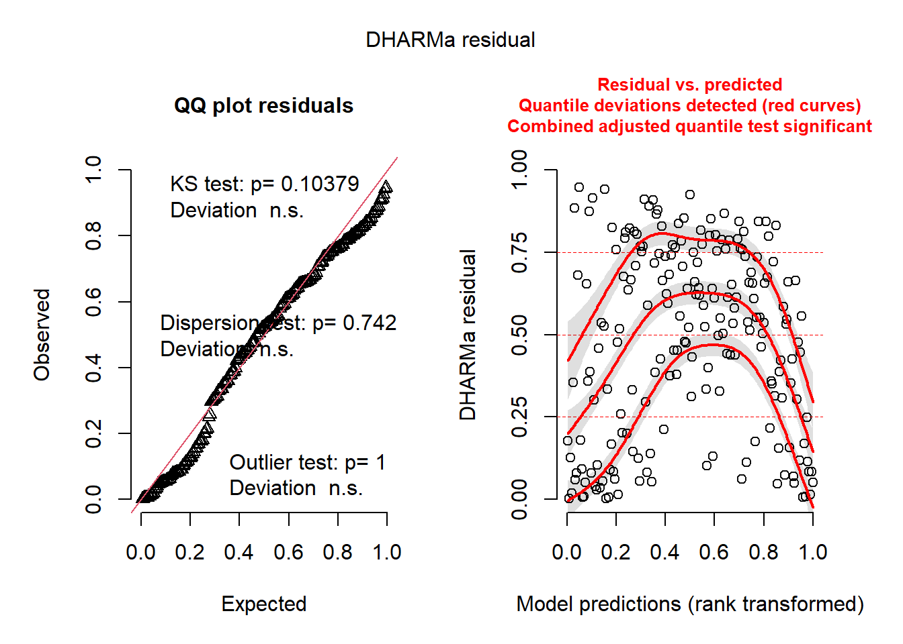
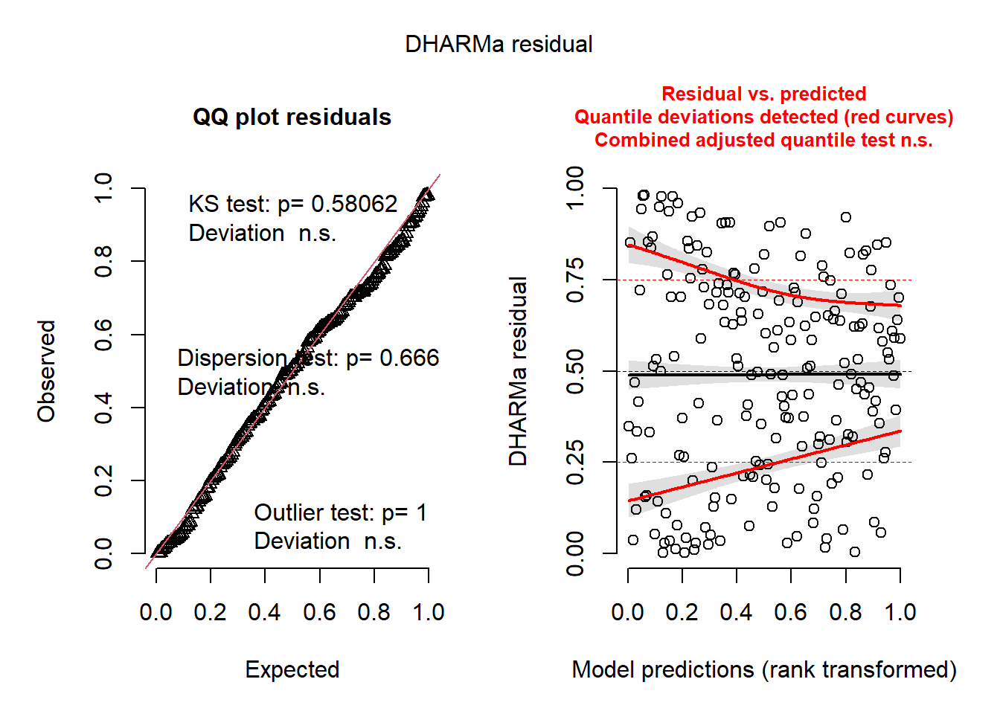

flowchart LR
C[C]
X[X]
M1[M1]
M2[M2]
Y[Y]
%% Edges
C --> X
C --> M1
C --> Y
X --> M1
X --> Y
M1 --> M2
X --> M2
M2 --> Y
%% Styles (fully editable)
style C fill:#FACECE,stroke:none,color:#000000,font-size:16px
style X fill:#D6EAF8,stroke:none,color:#000000,font-size:16px
style M1 fill:#FDEBD0,stroke:none,color:#000000,font-size:16px
style M2 fill:#FDEBD0,stroke:none,color:#000000,font-size:16px
style Y fill:#D5F5E3,stroke:none,color:#000000,font-size:16px
32 SCM: Total Effects
32.1 Introduction
This tutorial shows how to estimate total, direct, and indirect effects in a nonlinear structural causal model (SCM) using frequentist methods only (i.e. non Bayesian), with mgcv::gam() as the primary modeling tool. The example is built to be scientifically defensible rather than merely predictive. Like you would do for a scientific manuscript, this tutorial:
- states the causal DAG explicitly
- uses
dagittyto define the adjustment set for the total effect - simulates data from a known SCM with both linear and nonlinear edges
- includes two crossed random effects (
siteandobserver) - estimates direct and indirect effects by
g-computation, not by multiplying coefficients (next section)
Again, note that the first workflow you will be exposed to is entirely frequentist (something with which you are already familiar).
mgcv::gam()for structural equations,- AIC for pathway model (i.e. sub-model) comparison where appropriate
- bootstrap resampling for uncertainty in
g-computation(next section)
This section introduces a few key ideas using simple math. Do not worry. We will walk through the process step by step. We will cover the total effect, the direct effect (controlling for both mediators and confounders), and the indirect effect. Although causal decomposition (e.g., via g-computation) allows us to separate direct and indirect effects, we begin with the total effect and then, in the next tutorial, will cover formal causal decomposition. This is typically the first model you fit when addressing a broad causal question, before examining specific pathways or mediation.
WarningCentering and scaling of predictors is usually recommended.
In usual analyses, it is generally advisable for all predictors that appear on the right-hand side of equations to be centered and scaled before fitting the final structural equations. This is done for the following practical reasons:
- it makes optimization and estimation more stable
- it puts predictors on comparable numerical ranges
- it reduces problems when some predictors are measured in very different units (this is the main reason)
- it makes intervention values easier to define (oh wait, this is the main reason)
- and it often helps smooth terms and random effects behave more predictably
The final outcome Y is kept on its raw scale so the estimated causal contrasts remain interpretable in the original outcome units.
That is the key rule here:
Standardize predictors for estimation convenience; keep the final outcome on its natural scale for interpretation.
32.2 The scientific setup for this tutorial’s question
For our example, let us consider the following example (not a jackalope example). Suppose our primary goal is to test for the causal effect of an exposure X on a continuous outcome Y.
A baseline confounder C affects both X and Y, and also affects mediator M1. The effect of X on Y is partly direct and partly transmitted through two mediators:
X -> M1 -> M2 -> YX -> M2 -> Y
We also allow repeated observations arising from two crossed grouping factors (which become crossed random effects in our model):
siteobserver
These are not nested. Each observer can appear at multiple sites, and each site can be visited by multiple observers. Crossed –rather than nested– random effects are used in this example just to make the AIC comparisons a bit more interesting.
32.3 Constructing a causal Directed Acyclic Graph (DAG) of our system
Recall that we use the DAGs to guide our study design and our analysis. A well-defined DAG tells us what questions are appropriate given the causal assumptions of our DAG. Generally, this causal DAG implies the following:
- the total effect of
XonYshould adjust for confounders ofX -> Y, - mediators
M1andM2should not be included in the total-effect (TE) model - causal decomposition needs to be derived from the full SCM (again, this will be discussed in the next tutorial section)
Let us first address a simple way to model the total effect.
32.3.1 Total effect
The total effect can be thought of as a primary driver in your system. This includes all directed paths from X to Y; it is the overall effect that you want to know about, such as:
- Does temperature impact abundance?
- Does precipitation impact abundance?
In a kitchen-sink model, we may be tempted to throw both temperature and precipitation into the model and then compare coefficients. By now, we know that this approach could introduce bias. In the SCM world, the true total causal effect (TE) is assessed more directly, by comparing the expected outcome under two interventions (i.e. choices of temperature or precipitation values) on X. Let us see this in mathematical form:
\[
TE(x_1, x_0) = E[Y \mid do(X=x_1)] - E[Y \mid do(X=x_0)].
\] This equation may have a new operator that you have never seen before. The do operator was created by Judea Pearl to indicate an explicit intervention. Armed with this knowledge, see if you can think about the elements of this equation. Think about what the equation is describing. Here are some reminders:
*E*= expected value (essentially, the average)|= read this as “given” (as in “value ofYgivenX)
Let us walk through the process of estimating a total effect from our set of causal assumptions.
32.4 Workspace set-up
First, make sure that the following packages are loaded or added to your load_packages.r script.
library(tidyverse)
library(mgcv)
library(dagitty)
library(igraph)
library(broom)
library(furrr)
library(future)
library(gratia)
library(DHARMa)Let us know walk through the steps for estimating the total effect.
32.5 Step 0: Simulate a dataset to use for the SCM
We now simulate a dataset whose true generating process matches the DAG. The simulated example includes:
- one confounder
C, - one exposure
X, - two mediators
M1andM2, - a continuous outcome
Y, - two crossed random effects:
siteandobserver, - both linear and nonlinear edges.
The nonlinear edges will be:
X -> M1M2 -> Y
set.seed(20260408)
n_site <- 4
n_obs <- 5
n_rep <- 10
n <- n_site * n_obs * n_rep
site <- factor(rep(paste0("site_", seq_len(n_site)), each = n_obs * n_rep))
obs <- factor(rep(rep(paste0("obs_", seq_len(n_obs)), each = n_rep), times = n_site))
# crossed random intercepts
b_site_x <- rnorm(n_site, 0, 0.55)
b_obs_x <- rnorm(n_obs, 0, 0.45)
b_site_m1 <- rnorm(n_site, 0, 0.35)
b_obs_m1 <- rnorm(n_obs, 0, 0.30)
b_site_m2 <- rnorm(n_site, 0, 0.35)
b_obs_m2 <- rnorm(n_obs, 0, 0.30)
b_site_y <- rnorm(n_site, 0, 0.70)
b_obs_y <- rnorm(n_obs, 0, 0.55)
# exogenous confounder
C <- rnorm(n, mean = 0, sd = 1.1)
# exposure
X <- 0.85 * C +
b_site_x[site] +
b_obs_x[obs] +
rnorm(n, 0, 1.0)
# mediator 1
M1 <- 1.0 * sin(X / 1.3) +
0.55 * C +
b_site_m1[site] +
b_obs_m1[obs] +
rnorm(n, 0, 0.8)
# mediator 2
M2 <- 0.60 * X +
0.85 * M1 +
0.18 * C +
b_site_m2[site] +
b_obs_m2[obs] +
rnorm(n, 0, 0.9)
# outcome
Y <- 1.15 * X +
1.10 * M2 -
0.42 * (M2^2) +
0.70 * C +
b_site_y[site] +
b_obs_y[obs] +
rt(n, df = 6) * 0.9
dat <- tibble(
site = site,
obs = obs,
C = C,
X = X,
M1 = M1,
M2 = M2,
Y = Y
)
glimpse(dat)Rows: 200
Columns: 7
$ site <fct> site_1, site_1, site_1, site_1, site_1, site_1, site_1, site_1, s…
$ obs <fct> obs_1, obs_1, obs_1, obs_1, obs_1, obs_1, obs_1, obs_1, obs_1, ob…
$ C <dbl> 2.53019368, 0.09841712, -1.07479864, 0.34897694, 0.80689301, -0.5…
$ X <dbl> 0.95443559, 0.20817467, -1.55041162, 2.83542865, 0.30419252, -1.9…
$ M1 <dbl> 2.701884760, -0.566712174, -1.526371293, 1.438314550, 0.936134522…
$ M2 <dbl> 2.7620128, 0.2653152, -1.7551261, 2.9403361, 0.3641560, -2.770621…
$ Y <dbl> 4.0011511, -0.9691240, -5.4194487, 4.5770825, 1.3178349, -7.18640…summary(dat$Y) Min. 1st Qu. Median Mean 3rd Qu. Max.
-24.8498 -5.2079 -1.3382 -2.8798 0.7659 4.5954 We purposefully added some non-linearities into this simulated datasets. Let us quickly inspect them to see what we have.
p_x_m1 <- ggplot(dat, aes(X, M1)) +
geom_point(alpha = 0.08) +
geom_smooth(method = "gam", formula = y ~ s(x, k = 10)) +
labs(title = "Simulated nonlinear relation: X -> M1")
p_m2_y <- ggplot(dat, aes(M2, Y)) +
geom_point(alpha = 0.08) +
geom_smooth(method = "gam", formula = y ~ s(x, k = 10)) +
labs(title = "Simulated nonlinear relation: M2 -> Y")print(p_x_m1)
print(p_m2_y)
32.6 Step 1: Encode the DAG and recover the appropriate adjustment set using dagitty in R
Recall that the adjustment set for the total effect should be derived from the DAG; it should not come from guesswork or intuition. We have explored how to use the online user interface for dagitty, but this can also be automated to some degree directly in R. Examine the following code and see how the DAG can be input into R using a specific syntax that can be manually prepared or copied from the right-hand code box in the dagitty user interface.
First, save your DAG as an object (named something like dag_txt):
dag_txt <- dagitty("dag {
C -> X
C -> M1
C -> Y
X -> M1
X -> M2
X -> Y
M1 -> M2
M2 -> Y
}")This formalizes the set of casual assumptions of your system. The next step is to specify the exposure and outcome variables that are specific to your question. In this case, your question asks about the total-effect of X on Y. So, set your exposure and outcome appropriately in the adjustmentSets function:
dag_txtdag {
C
M1
M2
X
Y
C -> M1
C -> X
C -> Y
M1 -> M2
M2 -> Y
X -> M1
X -> M2
X -> Y
}adjustmentSets(dag_txt, exposure = "X", outcome = "Y"){ C }For this DAG, dagitty should identify C as the minimal sufficient adjustment set for the total effect of X on Y. This is exactly what we expect for a minimal model for this generally canonical causal DAG. That is, for this the total-effect model, the model should:
- include
C(the confounder) as a covariate (since this effectively blocks the other causal pathway toY) - not include mediators (
M1orM2) as this would eliminate the indirect causal pathway thereby yielding the direct versus total-effect.
32.7 Step 2: Fit the total-effect model using the DAG-derived adjustment set
Because the goal here is the total effect of X on Y, the DAG (and the adjustmentSets function) tells us to adjust for C and exclude mediators. That is simple enough. But we also need to include the two crossed random effects because repeated observations from the same site and observer are not independent. And, as we technically are naive about the dataset because we just collected it (and did not simulate it), we understand that nonlinear relationships might be possible. So, how do we determine the form of the total effects model? This will be the same logic and approach that you can use when conducting causal decomposition (though you might use slightly different tools).
The answer lies in our old friend, the Akaike Information Criterion (AIC).
32.7.1 Using AIC values for model comparison
AIC is useful for comparing candidate statistical representations of the same causal estimand. Specificaly, AIC can only be used to:
- compare plausible error structures
- compare plausible random-effects structures for the same fixed-effect specification (which is determined by your DAG logic)
AIC should not be used to:
- decide the causal estimand (what is included in your model)
- decide the adjustment set (again, what to include in your model)
For AIC comparisons involving optimization random-effect structures, we use method = "REML". After selecting random-effects structure based on lowest AIC, compare models with different forms (linear or nonlinear) using method = "ML".
Let us do that now!
32.7.2 Candidate total-effect models
First, focus on the random effect structure
# no random effect
mod_total_gaussian_none <- gam(
Y ~ X + C,
data = dat,
family = gaussian(),
method = "REML"
)
mod_total_gaussian_site <- gam(
Y ~ X + C + s(site, bs = "re"),
data = dat,
family = gaussian(),
method = "REML"
)
mod_total_gaussian_obs <- gam(
Y ~ X + C + s(obs, bs = "re"),
data = dat,
family = gaussian(),
method = "REML"
)
mod_total_gaussian_crossed <- gam(
Y ~ X + C + s(site, bs = "re") + s(obs, bs = "re"),
data = dat,
family = gaussian(),
method = "REML"
)Then, we compare using AIC.
aic_total_tbl <- tibble(
model = c(
"Gaussian, no random effects",
"Gaussian, site random effect",
"Gaussian, observer random effect",
"Gaussian, crossed site + observer random effects"
),
AIC = c(
AIC(mod_total_gaussian_none),
AIC(mod_total_gaussian_site),
AIC(mod_total_gaussian_obs),
AIC(mod_total_gaussian_crossed)
)
) |>
arrange(AIC) |>
mutate(delta_AIC = AIC - min(AIC))
aic_total_tbl# A tibble: 4 × 3
model AIC delta_AIC
<chr> <dbl> <dbl>
1 Gaussian, site random effect 1075. 0
2 Gaussian, crossed site + observer random effects 1076. 0.168
3 Gaussian, no random effects 1089. 13.2
4 Gaussian, observer random effect 1090. 14.3 Here, you can see that you have a choice. Does the more complex random effect structure reflect your study design more, or not? For now, let us assume that the “Gaussian, site random effect” model has the preferred random effects structure. We can now examine the functional form using method = "ML".
mod_total_gaussian_site <- gam(
Y ~ X + C + s(site, bs = "re"),
data = dat,
family = gaussian(),
method = "ML"
)
mod_total_scat_site <- gam(
Y ~ X + C + s(site, bs = "re") ,
data = dat,
family = scat(),
method = "ML"
)Let us again compare using AIC, this time focusing only on the two models for which we wanted to compare the functional form (specifically, the error distribution)
aic_total_tbl <- tibble(
model = c(
"Gaussian, site random effect",
"Scaled-t, site random effect"
),
AIC = c(
AIC(mod_total_gaussian_site),
AIC(mod_total_scat_site)
)
) |>
arrange(AIC) |>
mutate(delta_AIC = AIC - min(AIC))
aic_total_tbl# A tibble: 2 × 3
model AIC delta_AIC
<chr> <dbl> <dbl>
1 Scaled-t, site random effect 1050. 0
2 Gaussian, site random effect 1076. 25.8What to do from here? Think about the following:
- the model with the smallest AIC is the preferred statistical representation among these candidates
- if two models are very close, prefer the simpler model unless the added complexity is justified
In the above case, the model with the scaled-t error distribution is the best of the candidate models. So, we can use that one for the final total-effects model.
32.7.3 Get the final model
mod_total <- gam(
Y ~ X + C + s(site, bs = "re"),
data = dat,
family = scat(),
method = "REML"
)
summary(mod_total)
Family: Scaled t(3.243,2.345)
Link function: identity
Formula:
Y ~ X + C + s(site, bs = "re")
Parametric coefficients:
Estimate Std. Error z value Pr(>|z|)
(Intercept) -2.2338 0.5803 -3.849 0.000119 ***
X 1.7572 0.1737 10.116 < 2e-16 ***
C 1.4012 0.2376 5.898 3.68e-09 ***
---
Signif. codes: 0 '***' 0.001 '**' 0.01 '*' 0.05 '.' 0.1 ' ' 1
Approximate significance of smooth terms:
edf Ref.df Chi.sq p-value
s(site) 2.625 3 21.71 1.64e-05 ***
---
Signif. codes: 0 '***' 0.001 '**' 0.01 '*' 0.05 '.' 0.1 ' ' 1
R-sq.(adj) = 0.571 Deviance explained = 42.9%
-REML = 523.37 Scale est. = 1 n = 200plot(mod_total, all.terms=T, pages=1)
Now, for GAMs, checking the residual structure is a bit tricky. We must manually construct the residuals in DHARMa using a simulation. Here is how we do it.
# simulate from model
sim <- simulate(mod_total, nsim = 1000)
# create DHARMa object manually
res <- createDHARMa(
simulatedResponse = sim,
observedResponse = dat$Y,
fittedPredictedResponse = predict(mod_total, type = "response")
)
plot(res)
So, it not perfect and still has some structural issues. But we are close!
Remember that we originally wanted to examine the functional form of these relationships. Specifically, we wanted to test if there were any nonlinear relationships. Therefore, we could take one of two approaches:
- fit smoothers (within a GAM) to both terms simultaneously and let the smoothers do their work
- fit multiple models each with different combinations of smoothers
To see how this is all done, let us do the long way (second option above) first.
m_linear <- gam(
Y ~ X + C + s(site, bs = "re"),
data = dat,
family = scat(),
method = "REML"
)
m_x <- gam(
Y ~ s(X) + C + s(site, bs = "re"),
data = dat,
family = scat(),
method = "REML"
)
m_c <- gam(
Y ~ X + s(C) + s(site, bs = "re"),
data = dat,
family = scat(),
method = "REML"
)
m_b <- gam(
Y ~ s(X) + s(C) + s(site, bs = "re"),
data = dat,
family = scat(),
method = "REML"
)Check the AIC.
aic_total_tbl <- tibble(
model = c(
"all linear",
"smoothed X",
"smoothed C",
"smoothed both"
),
AIC = c(
AIC(m_linear),
AIC(m_x),
AIC(m_c),
AIC(m_b)
)
) |>
arrange(AIC) |>
mutate(delta_AIC = AIC - min(AIC))
aic_total_tbl# A tibble: 4 × 3
model AIC delta_AIC
<chr> <dbl> <dbl>
1 smoothed both 966. 0
2 smoothed X 997. 31.2
3 smoothed C 999. 33.4
4 all linear 1050. 83.5But, now, let use see what a simultaneous approach (fitting both terms as smoothers) yielded:
summary(m_b)
Family: Scaled t(3.277,1.865)
Link function: identity
Formula:
Y ~ s(X) + s(C) + s(site, bs = "re")
Parametric coefficients:
Estimate Std. Error z value Pr(>|z|)
(Intercept) -2.6148 0.5522 -4.735 2.19e-06 ***
---
Signif. codes: 0 '***' 0.001 '**' 0.01 '*' 0.05 '.' 0.1 ' ' 1
Approximate significance of smooth terms:
edf Ref.df Chi.sq p-value
s(X) 3.938 4.892 204.07 <2e-16 ***
s(C) 5.225 6.382 158.02 <2e-16 ***
s(site) 2.730 3.000 31.89 <2e-16 ***
---
Signif. codes: 0 '***' 0.001 '**' 0.01 '*' 0.05 '.' 0.1 ' ' 1
R-sq.(adj) = 0.727 Deviance explained = 56.9%
-REML = 486.29 Scale est. = 1 n = 200Here, both smoothers are nonlinear. Even if one of the smoothers indicated an estimated degree of freedom (edf) of 1, retained the term in the model as-is would not hurt.
Simulate residuals
# simulate from model
sim <- simulate(m_b, nsim = 1000)
# create DHARMa object manually
res <- createDHARMa(
simulatedResponse = sim,
observedResponse = dat$Y,
fittedPredictedResponse = predict(m_b, type = "response")
)
plot(res)
32.8 Next Up!
In the next section, we will conduct a formal causal decomposition!